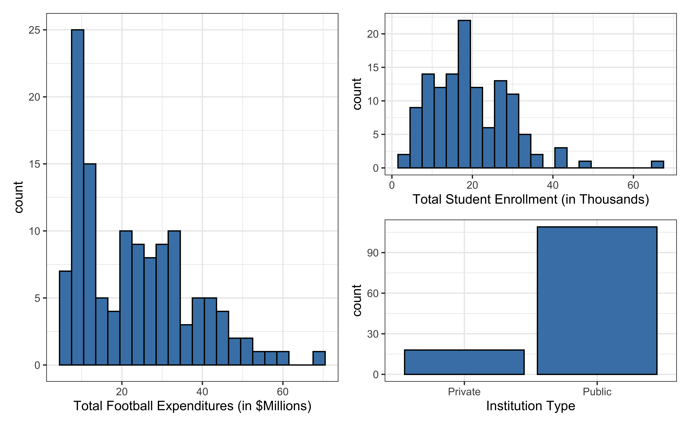
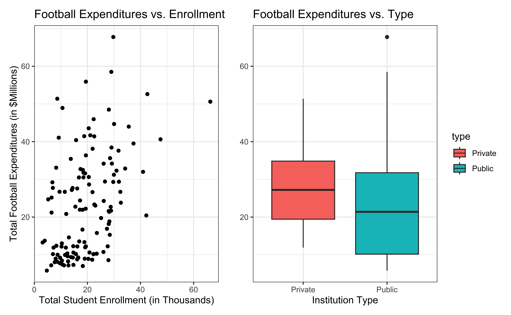

Today’s data come from Equity in Athletics Data Analysis and includes information about sports expenditures and revenues for colleges and universities in the United States. This data set was featured in a March 2022 Tidy Tuesday.
We will focus on the 2019 (2019 - 2020 season) expenditures on football for institutions in the NCAA - Division 1 FBS (Football Bowl Subdivision). The variables are :
total_exp_m: Total expenditures on football in the 2019 - 2020 academic year (in millions USD)
enrollment_th: Total student enrollment in the 2019 - 2020 academic year (in thousands)
type: institution type (Public or Private)
nonsense: a created variable (see above) which has nothing to do with expenditure
Univariate EDA

Bivariate EDA

Regression model
exp_fit <-lm(total_exp_m ~ enrollment_th + type + nonsense, data = football)tidy(exp_fit) |>kable(digits =3)
term
estimate
std.error
statistic
p.value
(Intercept)
17.833
3.523
5.061
0.000
enrollment_th
0.796
0.112
7.095
0.000
typePublic
-13.520
3.178
-4.254
0.000
nonsense
0.298
0.371
0.803
0.423
From sample to population
For every additional 1,000 students, we expect an institution’s total expenditures on football to increase by $780,000, on average, holding institution type constant.
This estimate is valid for the single sample of 127 higher education institutions in the 2019 - 2020 academic year.
But what if we’re not interested quantifying the relationship between student enrollment, institution type, and football expenditures for this single sample?
What if we want to say something about the relationship between these variables for all colleges and universities with football programs and across different years?
Hypothesis testing
Goal: evaluate the evidence that \(\beta_j \neq 0\).
Recall that our assumptions imply
\[
\hat{\beta} \sim \text{MVN}(\beta, \sigma^2 (\boldsymbol{X}^T \boldsymbol{X})^{-1})
\] which further implies
If \(\beta_j = 0\), then \(\hat{\beta}_j \sim N(0, \sigma^2 C_{jj})\).
Testing question: is the observed value of \(\hat{\beta}_j\) “consistent” with the hypothesis \(H_0: \beta_j = 0\)? In other words, is \(\hat{\beta_j} \sim N(0, \sigma^2 C_{jj})\) a reasonable conclusion?
If \(|Z_{\beta_j}|\) is large, we will reject the null. If it is small, we will ‘fail to reject’ the null.
Note
We can’t compute \(Z_{\beta_j}\) directly because we don’t know \(\sigma^2\). What we’ll do is plug in the unbiased estimator \(\hat{\sigma}^2 = \frac{\text{RSS}}{n-p}\) for \(\sigma^2\).
\(t_{\beta_j}\) is called a test statistic because it is the statistic (function of the data) that summarizes our evidence against the null.
Let \(t_{1-\frac{\alpha}{2}, n- p}\) be defined as qt(1 - (alpha/2), n - p), i.e. the (1-\(\alpha/2\)) quantile of a t-distribution with \(n-p\) degrees of freedom. Then
A p-value is: (1) a tail probability of a statistic under the null hypothesis, (2) the lowest value of \(\alpha\) such that \(H_0\) is rejected, (3) \(Pr(|t| > t_{\beta_j (obs)})\).
In R we can compute it: \(2 \times\) (1 - pt(abs(t), n - p)).
Hypothesis testing in R
Manually computing the standard error
\(Var(\hat{\boldsymbol{\beta}})\) for NCAA data
X <-model.matrix(total_exp_m ~ enrollment_th + type + nonsense, data = football)sigma_sq <-glance(exp_fit)$sigma^2var_beta <- sigma_sq *solve(t(X) %*% X)var_beta